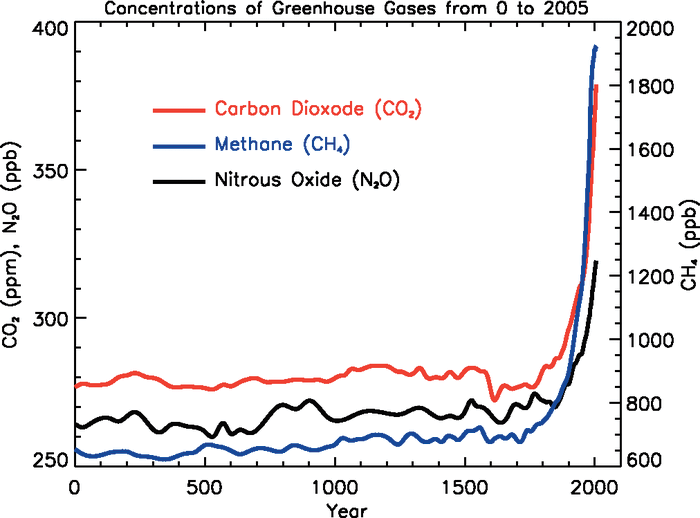

1 Natural and Human Causes of Climate Change
Climate is driven largely by radiation from the sun. Incoming solar radiation may be reflected, absorbed by land surface and water bodies, transformed (as in photosynthesis), or emitted from the land surface as longwave radiation. Each of these processes influences climate through changes to temperature, winds, the water cycle, and more. The overall process is best understood by considering the Earth’s energy budget.
Natural factors contributing to past climate change are well documented and include changes in atmospheric chemistry, ocean circulation patterns, solar radiation intensity, snow and ice cover, Earth’s orbital cycle around the sun, continental position, and volcanic eruptions. While these natural factors are linked to past climate change, they are also incorporated in the analysis of current climate change.
Since the Industrial Revolution, global climate has changed faster than at any other time in Earth’s history (Mann et al. 1999). This rapid rate of change—often referred to as human-caused climate change—has resulted from changes in atmospheric chemistry, specifically increases in greenhouse gases due to increased combustion of fossil fuels, land-use change (e.g., deforestation), and fertilizer production (Figure 2-1) (Forster et al. 2007). The primary greenhouse gases in the Earth’s atmosphere are carbon dioxide (CO2), methane (CH4), nitrous oxide (N2O), water vapor (H2O), and ozone (O3).

Incoming solar radiation is either absorbed, reflected, or re-radiated from the Earth’s surface. Since greenhouse gas concentrations are greatest near the surface, a large fraction of this reflected and re-radiated energy is absorbed in the lower portions of the atmosphere (hence the increase in surface temperatures and the term “greenhouse effect”—see sidebar). For the total energy budget to balance, the energy (and temperature) at the top of the atmosphere must decrease to account for the increase of energy (and temperature) near the Earth’s surface.
At natural levels, greenhouse gases are crucial for life on Earth; they help keep average global temperatures above freezing and at levels that sustain plant and animal life. However, at the increased levels seen since the Industrial Revolution (roughly 275 ppm then, 400 ppm now; Figure 1.2), greenhouse gases are contributing to the rapid rise of our global average temperatures by trapping more heat, often referred to as human-caused climate change. In the following chapters, we will refer to the impacts and effects of climate change as a result of both natural variability and human-caused climate change.